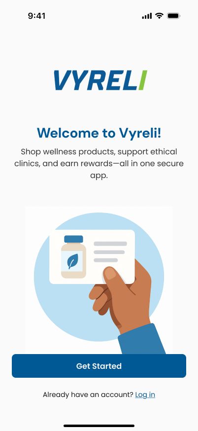
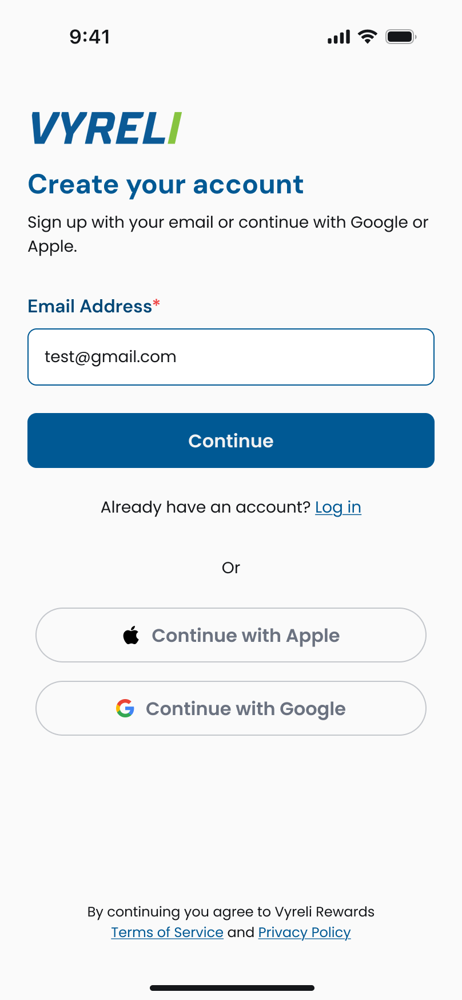
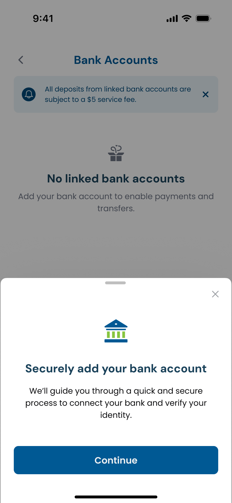
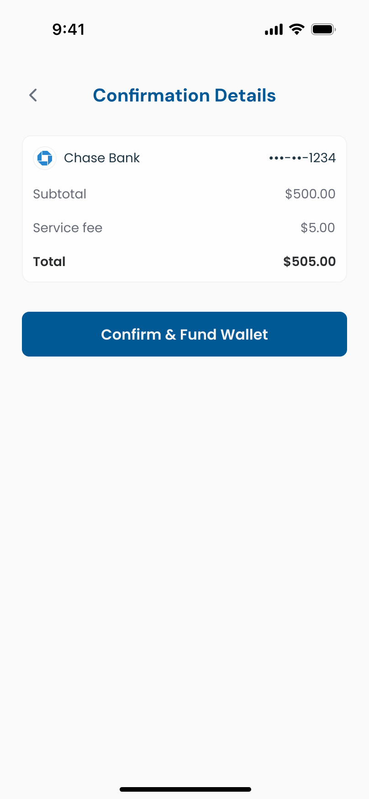

A wallet-first payment model that removed the wait from getting paid.


Paying wellness centers meant waiting on the banks.
Before Vyreli, paying a wellness center relied on traditional rails: cards, checks, direct transfers, all with processing delays baked in. Standard bank transfers typically take one to three business days to settle, and a first-time linked account can take three to five. For clinics, that meant getting paid days after service was delivered. For users, it meant genuine uncertainty about whether a payment had actually gone through.
Move the transfer out of the critical path entirely.
The fix wasn't making one transfer faster. It was removing the transfer from the moment of payment altogether. If money was already sitting in a user's wallet before they needed it, checkout could be instant regardless of how slow the underlying banking rails were.
Instant rails as the default
FedNow and RTP surfaced as the recommended path for funding a wallet, both settling in seconds at no fee, with traditional bank transfer kept available for users without access to instant rails.
Fund once, pay instantly
Once funds are in the wallet, paying a wellness center at checkout draws from that balance immediately, with no waiting on bank processing at the point of sale.
Clarity over choice paralysis
A simple mode / duration / fee table makes the speed-versus-familiarity tradeoff obvious at a glance, instead of something users have to dig for.



Speed still had to feel accountable.
Because Vyreli operates as a registered money services business with a bank partner behind the wallet, the interface couldn't just optimize for speed. It had to keep the relationship between a user's money and its source legible at every step. That shaped small but deliberate choices: always naming the linked bank explicitly at confirmation rather than hiding it behind a generic "your wallet," separating the service fee from the transfer amount instead of folding it into one number, and never letting the "Recommended" instant option imply the slower option was somehow less safe. Fast and trustworthy needed to read as the same thing, not a tradeoff the user had to reconcile themselves.
Where this goes next.
Payouts, not just funding
The same instant-rail logic could extend to how wellness centers pull earnings out of the platform, closing the loop on both sides of the transaction.
Proactive balance nudges
Light, optional prompts to top up before a scheduled visit, so funding never becomes a blocker at the point of care.
Transparent risk signals
Surfacing simple, plain-language status on any hold or review a transfer is under, rather than a silent delay a user has to guess at.
What this project taught me.
The hardest part wasn't the payment logic. It was resisting the urge to make "instant" the only story on the screen. Wellness purchases carry real financial and health-adjacent weight for people, so the design needed to earn trust before it earned speed. That meant being explicit where a purely optimized flow would have been quieter: naming the bank, separating the fee, showing the trade-off plainly instead of nudging users toward the fastest path. Designing for a regulated product taught me that clarity is itself a safety feature, not just a usability one.
Getting paid stopped being something you wait for.
Wellness centers get paid at the point of sale instead of days later, and users get a payment experience that feels immediate, with rewards layered on top to keep them funding and returning.